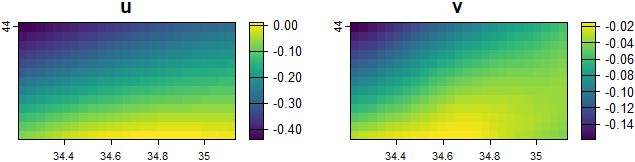
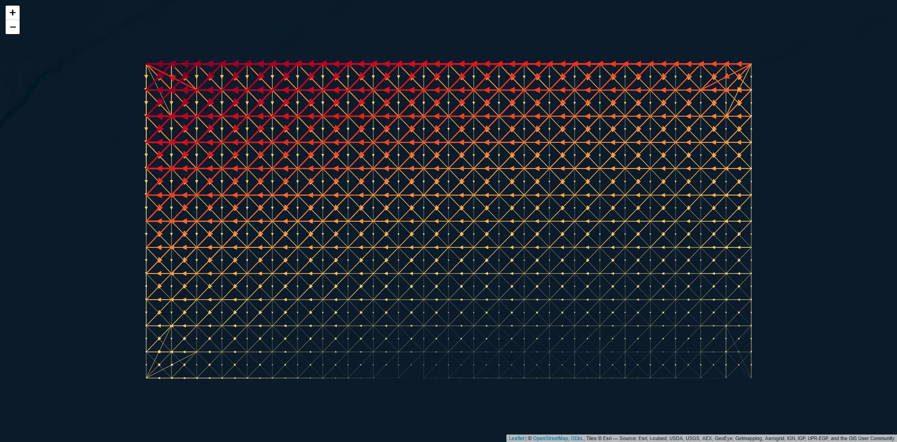
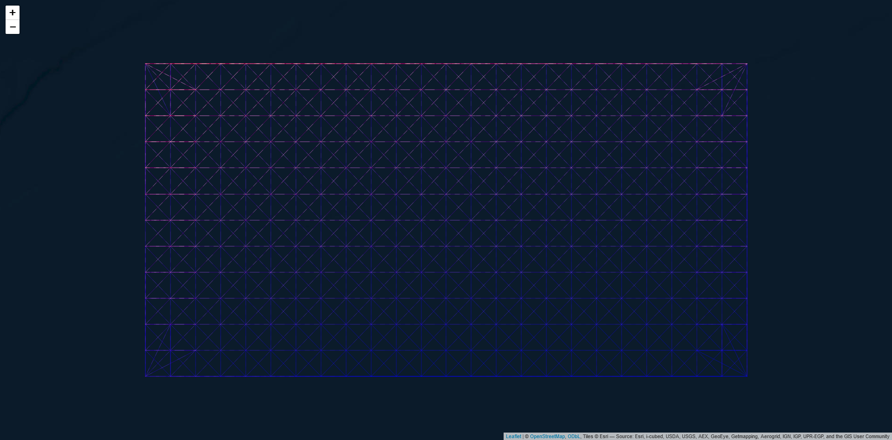

This research was conducted at the Department of Marine Sciences, University of the Aegean, Greece, supported by the European Union’s Horizon 2020 research and innovation programme HORIZON-CL6–2021-BIODIV-01–12, under grant agreement No 101059407, “MarinePlan – Improved transdisciplinary science for effective ecosystem-based maritime spatial planning and conservation in European Seas”.
Introduction to the SeaGraphs Package (tutorial)
A plethora of sea current databases is typically available along many fields data (e.g. Lima et al. (2020)). However, transforming these data into a graph structure is not a straightforward implementation. This gap is attempted to be filled by SeaGraphs package. A further inspection of the methods used in this package is illustrated at Nagkoulis et al. (2025), where the whole Black Sea is examined.
Installation
Development version of the package can be installed using:
if (!require(remotes)) install.packages("remotes")
remotes::install_github("cadam00/SeaGraphs")Citation
Nagkoulis N, Adam C, Mamoutos I, Mazaris AD, Katsanevakis S, 2025. An ecological connectivity dataset for Black Sea obtained from sea currents. Data in Brief 58: 111268. https://doi.org/10.1016/j.dib.2024.111268
Illustration example
Currents information about the flow directions is usually split into horizontal (\(u\)) and vertical (\(v\)) components, regarding the horizontal and the vertical flow of the currents, respectively. As an example we use a modified yearly aggregated subset of the Black Sea site (Lima et al., 2020; Schulzweida, 2023) provided in the form of SpatRaster elements. This input can be plotted using the following:
# Import packages
library(SeaGraphs)
library(terra)
# Get example u and v components
component_u <- get_component_u()
component_v <- get_component_v()
# Plot each component
par(mfrow=c(1,2), las=1)
plot(component_u, main="u")
plot(component_v, main="v")
Figure 1: Currents \(u\) and \(v\) components.
In Figure 1 the two directions of components \(u\) and \(v\) are presented, with higher currents values detected at the South-West direction. A directed spatial graph in multiple forms (spatial network, shapefile, edge list, adjacency matrix) based on these components is constructed, based on these two components using the following process. This is doable by running the seagraph command as follows:
# Transform currents information to graph
graph_result <- seagraph(component_u = component_u,
component_v = component_v)Flow and antpath leaflet maps are two possible graphical representations of such graphs using the SeaGraphs could be performed, but using graph_result elements, like the shapefile one is possible as well. Note that the South-Western directions of flows and magnitudes the final graphs are depicted in both Figures 2 and 3. Note that these outputs are dependent on the selected number of nearest neighbors in the seagraph function.
flows_sfn(graph_result)
Figure 2: Flow leaflet map.
antpath_sfn(graph_result)
Figure 3: Antpath leaflet map.
References
Lima, L., Aydogdu, A., Escudier, R., Masina, S., Ciliberti, S. A., Azevedo, D., Peneva, E. L., Causio, S., Cipollone, A., Clementi, E., Cretí, S., Stefanizzi, L., Lecci, R., Palermo, F., Coppini, G., Pinardi, N., and Palazov, A. (2020). Black Sea Physical Reanalysis (CMEMS BS-Currents) (Version 1) [Data set]. Copernicus Monitoring Environment Marine Service (CMEMS). https://doi.org/10.25423/CMCC/BLKSEA_MULTIYEAR_PHY_007_004. Last Access: 07/11/2024.
Nagkoulis, N., Adam, C., Mamoutos, I., Katsanevakis, S., and Mazaris, A. D. (2025). An ecological connectivity dataset for Black Sea obtained from sea currents. Data in Brief, 58, 111268. https://doi.org/10.1016/j.dib.2024.111268
Schulzweida, U. (2023). CDO User Guide (23.0). Zenodo. https://doi.org/10.5281/zenodo.10020800